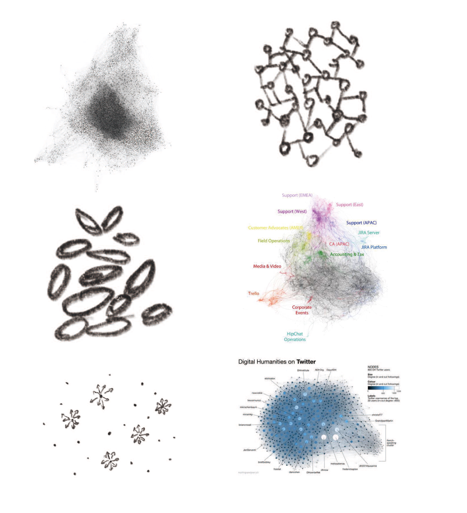
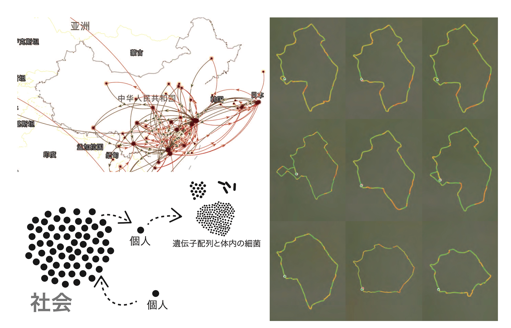
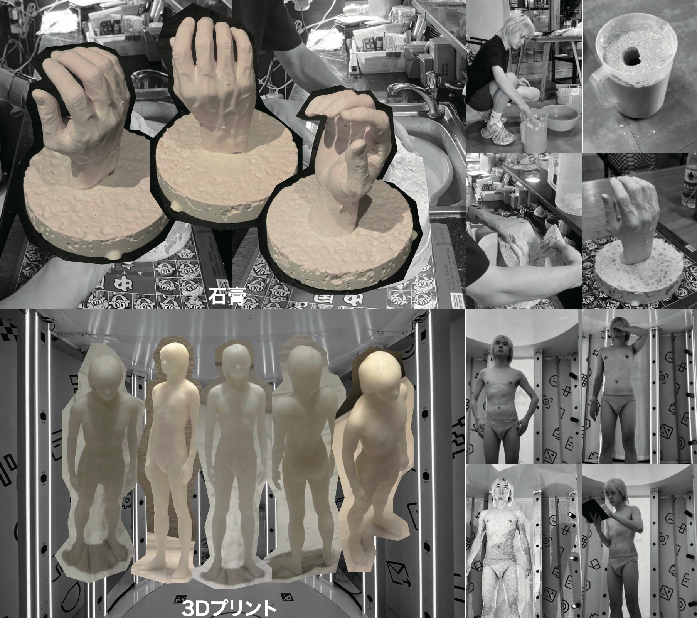
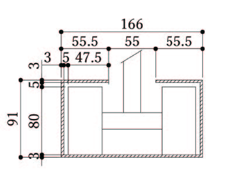
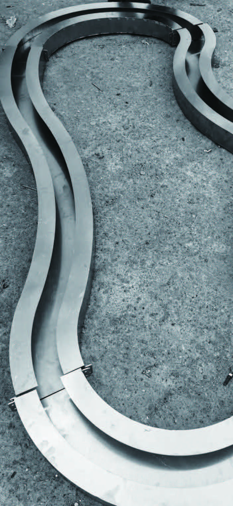
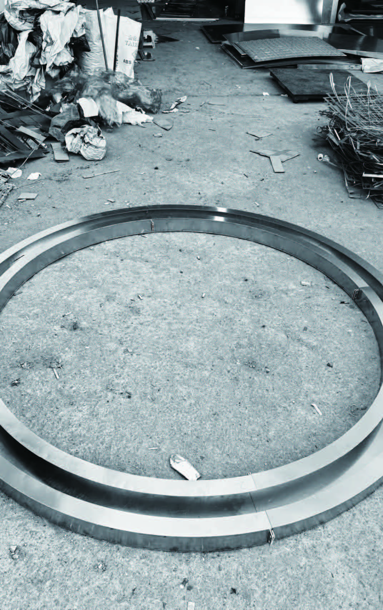
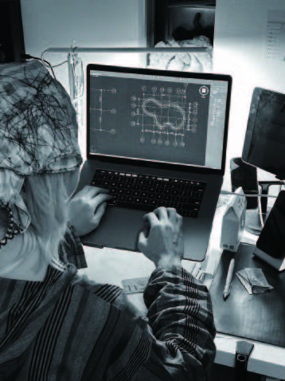

01 / SOCIETY

SCALE 01
リンクは人を結び、同時に形づくる
人々はネットワークの結節点として互いに結びつく。組織は人をつなぐ一方、階層的な管理をつくり、行動、思考、社会的な役割を知らないうちに形づくる。規律の痕跡は、オンラインの交流から組織、さらには私たち自身の神経ネットワークにまで連続している。

KINETIC INSTALLATION · 2024
SELF-WILL / 動的インスタレーション
CORE QUESTION
本作は、身体を分解し、異なる軌道上で再構成する動的インスタレーションである。精密に設計されたレールは、あらかじめ定められた運命の枠組みを象徴し、その上を動き続ける身体部位は、人間の主観、葛藤、自由意志を表す。
決められた構造と、その中でなお動こうとする身体を同時に提示することで、人は社会や運命によってどこまで形づくられ、それでもどこに自由を見いだせるのかを問う。
人は「努力すれば報われる」と語り、成功者は努力によって自らの成功を正当化しがちである。しかし、工場で人々の生活を観察した経験や、努力しても目標に届かない人々を見た経験から、私は努力と結果の関係を疑うようになった。自由意志によって運命を制御できるという感覚自体が、社会の枠組みの中で生まれた幻想なのではないか。
RESEARCH ATLAS
自由意志は行為の可能性を開く一方、社会は制度、規律、自己管理を通じて個人を形づくる。本作では、この緊張を社会、生活、個体という三つの尺度から読み解いた。

人々はネットワークの結節点として互いに結びつく。組織は人をつなぐ一方、階層的な管理をつくり、行動、思考、社会的な役割を知らないうちに形づくる。規律の痕跡は、オンラインの交流から組織、さらには私たち自身の神経ネットワークにまで連続している。

日常の明示的なルールと暗黙のルールは、私たちの移動経路を共同で設計する。地図やGPSのような便利な道具も、活動の範囲や視点を固定し得る。外部の社会規則と内面化された自己制約が重なり、自由を求める過程そのものに見えない枷をつくる。

工業化によって細分化された分業は、個人をモジュール化された構成要素のように組み込んできた。身体と労働は社会の運営機構に深く結びつき、役割とアイデンティティは分割される。人は巨大な社会機械に不可欠でありながら、全体性と自主性を失った部品のように感じる。

PLAN A · REJECTED
微生物、神経線維、血小板などに見られる形態や移動パターンを抽出し、複数の路線図として重ねることで、人間社会の構造を表そうとした。
却下：複雑さそのものが前面に出て、自由意志と規律の対立が伝わりにくくなった。
EXPERIMENT
PLAN Aの複雑さを解きほぐし、社会の構造、日常の経路、分節された身体という三つの尺度を、より少ない記号へ置き換えた。

法律、監視、議会、時間、通貨、宗教など、日常に遍在する権力の記号を円へ凝縮した。同時に、私自身の生活軌跡を単純化し、規律によって変形するもう一つの経路をつくった。
結果：社会形態と個人の生活を表す二つの軌道

歩行や姿勢を含む身体の使い方は、学習と訓練を通して後天的に獲得される。社会化された身体を石膏と3Dプリントによって部分へ分け、それぞれを独立して移動できる要素として再構成した。
結果：身体は一つの全体ではなく、移動する複数の部位になる
PLAN B · SELECTED
社会、生活、個体を別々の層として構成し、それぞれの軌道上で身体部位を動かす。あらかじめ決められた経路と、その中で動き続ける身体を重ねることで、個人の意志と社会的規律のあいだに真の自由が存在するかを問う。

円形の軌道。凝縮され、記号化された社会の運行構造と、その構造の中で動く身体部位を示す。
変形した軌道。個人の日常に組み込まれた規律の経路と、本人が自由だと考える身体の動きを示す。
傾斜した軌道。分解された身体部位と空を見上げる頭部によって、社会に形づくられながらも自由を求める個人を示す。
問いを三つの層へ明確に整理でき、解釈と伝達に適している。さらに、制作可能な構造へ変換しながら、意図を失わずに実現できるため、この案を最終案として採用した。
SIMULATION + FABRICATION
最終案は、3Dシミュレーション、寸法図、金属レールの加工、移動機構の検証を通して実体化した。ここでは、制作資料から確認できる工程だけを示す。

三層の軌道、支持構造、身体部位の位置関係を3D上で検討した。

図面上の主要寸法：円形軌道 2,000 mm、変形軌道 約1,996.25 × 1,205.35 mm。

加工前後に軌道形状と接合位置を確認し、三層の関係を調整した。






EXHIBITION
三つの軌道は一つの空間に重なり、分解された身体部位はそれぞれの経路を循環する。観者は、全体を見渡しながら、個々の身体が同じ構造から逃れられない状態に立ち会う。